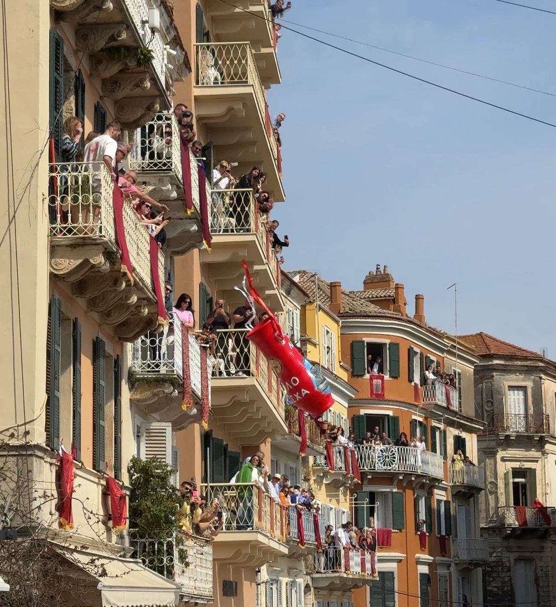
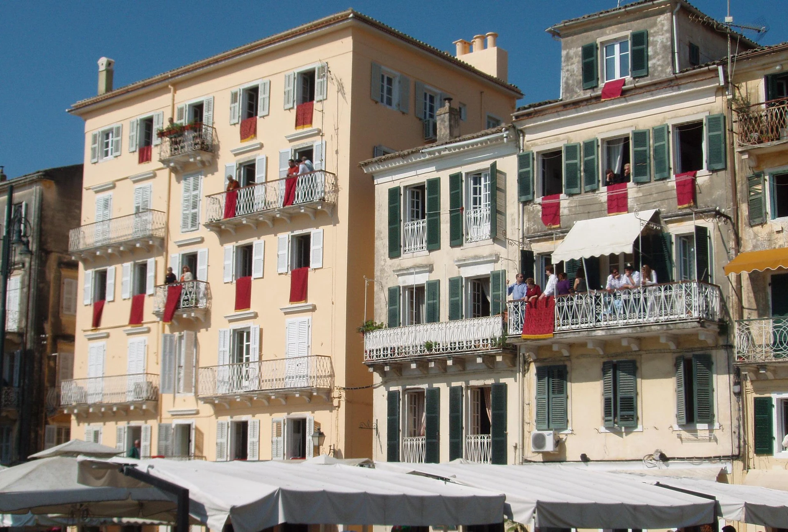
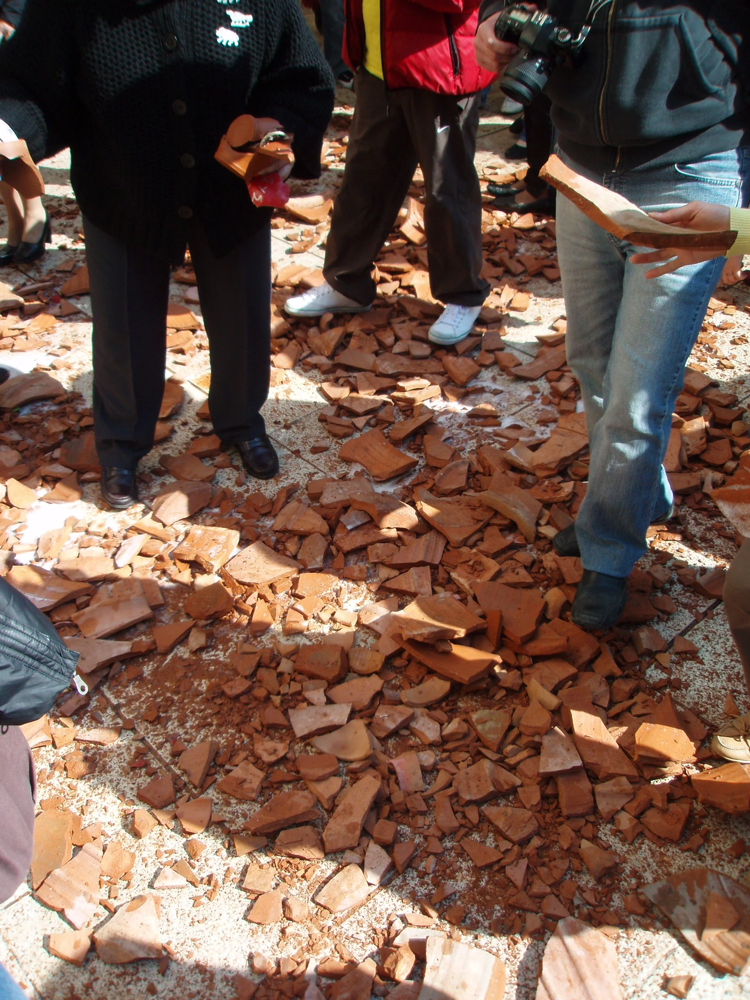

아직 펼치지 않은 카드어둠 속에 번지는 불 · 4코르푸섬 항아리 던지기부활절 전 토요일 아침, 코르푸섬 사람들은 창밖으로 무엇을 던질까요?창문 밖으로 커다란 항아리를 던진대!
2026년 4월 11일 · 성토요일 오전 11시그리스 코르푸섬 구시가지
코르푸섬 항아리 던지기
그리스 코르푸섬의 성토요일 오전 11시, 도시의 모든 종이 울리는 순간이에요. 빨간 천을 드리운 발코니마다 물을 채운 흙 항아리가 길로 떨어져 쨍그랑 깨져요. 항아리 하나를 준비해 던지기까지, 그날 아침의 차례대로 해 보세요.
부활절 전 토요일 아침, 그리스의 한 섬에서는 종이 울리면 창밖으로 물 항아리를 던져서 쨍그랑 깨뜨린대! 우리도 항아리 하나를 준비해 볼까?
검수 전 시안이에요(기준서 2판 · 초벌). 장면에는 코르푸 시 관광 안내, 그리스 관광청, 2024~2026년 보도에 있는 것만 옮겼고, 풍습이 어디서 왔는지는 여러 설이 있어 설이라고 밝혔어요. 상상은 ‘눈 감고 상상해 보기’에만 썼어요.
시안 확인용카드 단계 미리 보기
1
빨간 천의 아침
성토요일 아침, 그리스 코르푸섬의 구시가지. 창과 발코니마다 빨간 천이 드리워 있어요. 빨강은 코르푸를 나타내는 색이에요.
발코니에도, 길에도 사람들이 가득해요. 모두 오전 11시를 기다려요.

창문마다 빨간 천이 걸려 있어! 사람들이 무언가를 기다리고 있어.
물어보기발코니에 나온 사람들은 무엇을 기다리고 있을까?
2
성 스피리돈의 행렬
아침 9시, 성 스피리돈 성당에서 행렬이 나서요. 코르푸의 수호성인 성 스피리돈의 유해와, 그리스도의 무덤을 나타내는 에피타피오스(꽃으로 덮은 관)를 함께 모시고 구시가지를 돌아요.
그리스의 다른 곳에서는 에피타피오스 행렬을 성금요일에 하지만, 코르푸는 토요일 아침에도 해요. 베네치아가 섬을 다스리던 때 안전을 이유로 성금요일의 정교회 행렬을 막았기 때문이에요. 1574년부터 이어 온 풍습이에요.
성 스피리돈의 성토요일 행렬은 1550년, 섬이 굶주림에서 벗어난 일을 기려 시작되었어요. 코르푸의 큰 악단 셋이 행렬을 따르며 장례 행진곡을 연주해요.
이보다 이른 새벽 6시에는 ‘이방인의 성모 성당’에서 신자들이 의자를 두드려 ‘지진’을 일으켜요. 그리스도께서 부활하실 때 일어난 지진을 다시 보여 주는 풍습이에요.
아침에는 꽃으로 덮은 관과 성인의 유해를 모시고 동네를 한 바퀴 돌아. 악단이 슬픈 음악을 연주해.
물어보기새벽에 의자를 쿵쿵 두드리면, 어떤 소리가 날까?
3
항아리 하나
던질 흙 항아리를 ‘보티스’, 여럿이면 ‘보티데스’라고 불러요. 크고 작은 것이 있고, 입이 좁고 양옆에 손잡이가 둘 달렸어요.
한 집의 발코니에서 항아리 하나가 준비되어 길에 떨어지기까지, 그날 아침의 차례대로 해 보세요.
단추를 누를 때마다 그날 아침이 한 단계씩 지나가요.
이 안내서가 그린 단계 그림 · 코르푸 시 관광 안내, 그리스 관광청, 위키백과 ‘Botides’를 바탕으로(항아리 오른쪽 절반은 속을 보여 주려고 잘라 그렸어요)
쨍그랑! 항아리 하나가 깨지고, 행운의 조각이 남았어요. 이제 악단들이 거리로 나서요.
빨간 천을 걸고, 리본을 묶고, 물을 채우고… 종이 울리면 던져!
물어보기항아리에 왜 물을 가득 채울까?
4
쨍그랑!
오전 11시, 대성당의 노래를 신호로 도시의 모든 종이 기쁘게 울리고, 수많은 항아리가 발코니에서 떨어져요.
깨지는 소리가 천둥 같아요. 가까이 선 구경꾼들은 물보라와 흙 조각을 맞기도 해요. 그래도 크게 다친 사람은 아직 없었다고 주최 측은 말해요.

15분쯤 지나 소리가 잦아들면, 사람들은 깨진 조각을 주워 가요. 행운을 가져다준다고 여겨서예요. 그리고 악단들이 「그리스인들이여, 두려워 마라」 같은 기쁜 행진곡을 연주하며 거리로 나서요.
왜 항아리를 깨뜨리게 되었는지는 여러 설이 있어요. 베네치아 사람들이 새해에 묵은 그릇을 깨뜨리던 풍습에서 왔다는 설, 봄을 맞던 옛 그리스의 풍습에서 왔다는 설, 나쁜 기운을 쫓는다는 설이 함께 전해져요.
종이 울리자 쨍그랑! 쨍그랑! 항아리가 한꺼번에 떨어져. 조각을 주우면 행운이 온대.
물어보기깨지는 소리를 들어 볼래? 무슨 소리 같아?
5
“하나님, 일어나소서”
항아리가 떨어지기 바로 전, 대성당에서 울려 퍼지는 노래예요. 그리스 정교회의 성토요일 아침 예배에서 사제는 이 구절을 노래하며 성당 안에 월계수 잎과 꽃잎을 뿌려요. 부서진 지옥의 문과 끊어진 사슬, 죽음을 이긴 기쁨을 나타내요.
“하나님, 일어나 땅을 심판하소서. 모든 민족을 주님께서 물려받으실 것입니다.”
시편 82편 8절 · 성토요일 아침 예배에서 부르는 구절 · 이 안내서가 우리말로 옮김
코르푸 사람들은 깨지는 항아리에서 질그릇을 부순다는 예언자의 말을 읽어요. 코르푸 시의 안내는 그 요란한 소리가 삶이 죽음을 이긴 것을 나타내는지도 모른다고 적어요.
부활의 큰 잔치는 그날 자정이에요. 그 밤 스피아나다 광장 위쪽 음악당에서 “크리스토스 아네스티”를 노래하고, 북소리와 불꽃이 이어져요. 아침의 항아리 소리는 그 밤을 미리 여는 ‘첫 부활’이에요.
항아리가 떨어지기 바로 전에 “하나님, 일어나세요!” 하고 노래한대. 교회 안에서는 월계수 잎을 뿌려.
물어보기“일어나세요!” 하고 부르면, 누가 일어날까?
눈 감고 상상해 보기
봄 햇살 아래 좁은 골목, 빨간 천이 바람에 흔들려요. 발코니마다 사람들이 무거운 항아리를 난간 위로 들어 올리고 숨을 죽여요. 멀리서 노래가 들리다, 갑자기 온 도시의 종이 한꺼번에 울려요. 쨍그랑, 쨍그랑! 물보라가 햇빛에 반짝이고, 발밑으로 빨간 조각이 굴러와요.
눈을 감아 봐. 햇살이 따뜻해. 빨간 천이 펄럭펄럭. 다들 항아리를 들고 기다려. 땡그랑땡그랑, 종이 울린다! 쨍그랑! 물이 튀어서 시원해!
나의 자리
부활의 큰 잔치는 자정인데, 코르푸 사람들은 아침 11시 ‘첫 부활’의 종소리에 벌써 항아리를 깨뜨려요. 내게도 다 오기 전에 미리 터뜨리고 싶은 기쁨이 있나요?
기쁜 소식을 들으면, 너는 어떤 소리를 내고 싶어?
마음에 닿는 한 줄을 고르거나 직접 써 보세요. 한 줄을 남기면 이 자리의 도장이 찍혀요. 이 기기에만 저장돼요.
더 깊이
궁금한 칸만 펼쳐 읽어도 괜찮아요.
기록마다 다른 점
항아리 속 코르푸 시의 안내와 위키백과, 그리스 관광청은 항아리에 물을 채운다고 적어요. 한 영어 기사는 빨간 리본을 채운다고 적었는데, 다른 기록들은 리본을 손잡이에 묶는다고 적어요.
몇 시에 대부분의 기록은 오전 11시라고 적지만, 한 기사는 낮 12시라고 적었어요. 코르푸 시의 안내는 11시에 대성당 예배가 시작되고, 그 노래를 신호로 종이 울린다고 적어요.
어디서 왔나 베네치아의 새해 풍습, 옛 그리스의 봄맞이, 성경의 질그릇 말씀, 부활 때의 지진, 나쁜 기운 쫓기까지 여러 설이 있어요. 어느 하나로 정해져 있지 않아요.
함께 읽는 말씀
말씀은 뜻만 옮기고, 본문은 대한성서공회 개역개정으로 이어 드려요.
시편 82편 8절 하나님께 일어나 세상을 심판해 달라고 부르짖는 구절이에요. 성토요일 아침, 항아리가 떨어지기 바로 전에 대성당에서 이 구절을 노래해요.
시편 2편 9절 질그릇같이 부순다는 말씀이에요. 성경에는 질그릇을 깨뜨리는 비유가 여러 번 나와요.
마태복음 28장 2절 큰 지진이 나고 주의 천사가 무덤의 돌을 굴려 냈다는 말씀이에요. 새벽 6시의 ‘지진’ 풍습은 이 장면을 다시 보여 줘요.
직접 가 보기
확인한 날 · 2026년 11월 22일 · 바뀌기 쉬운 정보라 정기적으로 다시 확인해요
코르푸 구시가지의 리스톤 거리와 스피아나다 광장 둘레에서 볼 수 있어요. 2027년 정교회 성토요일은 5월 1일이에요.
아침 9시 성 스피리돈 행렬 뒤, 오전 11시에 시작해 15분쯤 이어져요. 사람이 아주 많으니 일찍 자리를 잡고, 항아리가 떨어지는 곳에서는 조금 떨어져 서세요.
항아리 하나 금박
빨간 천부터 행운의 조각까지, 여섯 단계를 끝까지 해 보면 카드에 금박이 입혀져요.
빨간 천 → 리본 → 물 → 종소리 → 던지기 → 조각 줍기, 끝 단계까지 해 보기
그날의 소리 채색
둘 가운데 하나만 해도 카드가 채색돼요.
넷째 장면에서 항아리 깨지는 소리 듣기
아이와 함께 ‘영화처럼 보기’를 끝까지 보기
근거 보기 (10)
- 코르푸 시 관광 안내: 2023 부활절 일정 — 새벽 6시 지진 재현(이방인의 성모 성당), 9시 성 스피리돈 행렬과 에피타피오스, 11시 대성당 예배, “하나님, 일어나 땅을 심판하소서”에 종이 울리고 항아리를 던짐, 첫 부활, 예언자의 말, 삶이 죽음을 이김, 악단의 장례 행진곡
- 위키백과(영어): Botides — 11시, 15분쯤, 입이 좁고 손잡이 둘, 빨간 리본, 물, 빨간 천, 리스톤, 여러 설, 행운의 조각, 「오이 그레키」 행진곡
- 위키백과(영어): Easter in Corfu — 1550년 굶주림, 1574년부터, 베네치아의 성금요일 행렬 금지, 의자를 두드리는 지진, 자정 음악당과 불꽃
- 그리스 관광청(Visit Greece): 코르푸섬의 부활절 — 2026년 4월 11일 오전 11시, 모든 성당의 종, 첫 부활, 손잡이 둘 달린 흙 항아리, 빨간 리본, 물
- 그릭 시티 타임스(2024.5.4): 빨강은 코르푸의 색, 떨어질 때 소리가 나게 물을 채움, 「그리스인들이여, 두려워 마라」, 베네치아와 옛 그리스의 설
- 더 월드(2018.4.7): 천둥 같은 소리, 물보라와 조각, 크게 다친 사람 없음, 조각을 행운의 부적으로
- 정교회 위키: 성토요일 — “하나님, 일어나소서”를 노래하며 월계수 잎과 꽃잎을 뿌림, 부서진 지옥의 문과 사슬, 죽음을 이긴 기쁨
- 프로토테마(2026.4.11): ‘첫 부활’은 부활 밤의 서곡, 코르푸 이방인의 성모 성당
- 위키미디어 공용: 2024년 항아리 깨지는 영상, 2025년 「미 포바스테 그레키」 영상(Gkaridis0 · CC BY 4.0)
- 대한성서공회 개역개정: 시편 82편 · 시편 2편 · 마태복음 28장
그림·사진·소리 출처
- 사진: Cplakidas · CC BY-SA 3.0 · 위키미디어 공용
- 그림: 게오르기오스 사마르치스 · 퍼블릭 도메인 · 위키미디어 공용
- 사진: Gkaridis0 · CC BY 4.0 · 위키미디어 공용
- 사진: Cplakidas · CC BY-SA 3.0 · 위키미디어 공용
- 사진: Gkaridis0 · CC BY 4.0 · 위키미디어 공용
- 항아리 깨지는 소리 · 2024년 성토요일 코르푸 펜도파나로 광장(아르카디온 호텔에서 찍은 영상) · 찍은 사람: Gkaridis0 · CC BY 4.0 · 위키미디어 공용 · 영상의 소리만 씀
- 「그리스인들이여, 두려워 마라」(미 포바스테 그레키) · 2025년 성토요일 카포디스트리아스 악단 · 찍은 사람: Gkaridis0 · CC BY 4.0 · 위키미디어 공용 · 영상의 소리 앞부분만 씀
‘처음 만나는 기독교 문화’의 깊은 카드예요. 단계 그림은 이 안내서가 그렸어요. 카드 단계와 남긴 글은 이 기기에만 저장돼요.